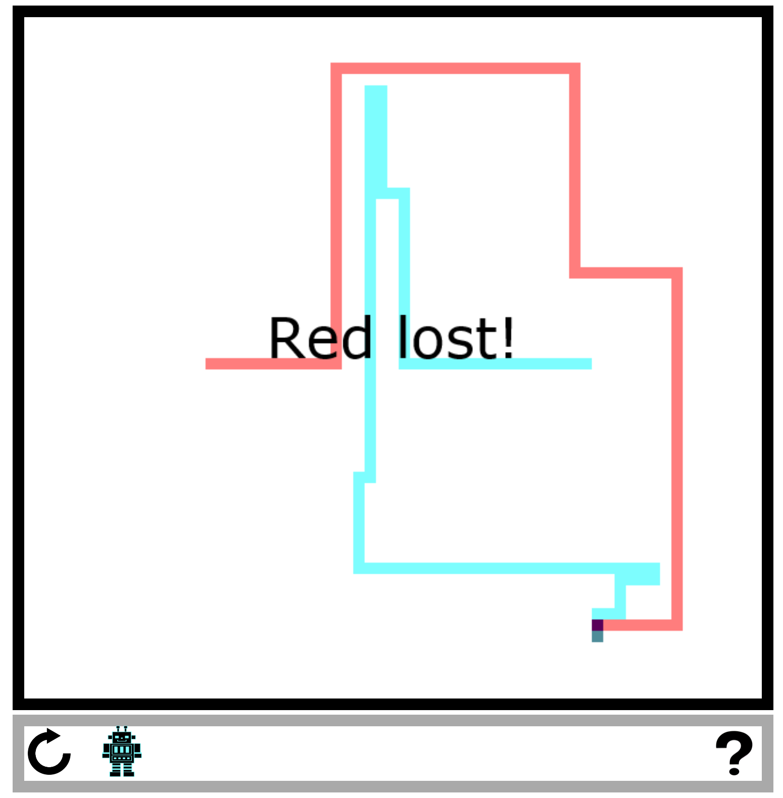

Tron
Simple Tron desktop app created over a few days because I was curious about electron.js. User can play against an AI implementing a minimax algorithm
EZ Chat
Simple chat web-app to teach myself the ultra-basics of socket.io and express.js.


Safewalk
Group created Uber-like web-app for escorted walkers on university campuses. Created with React.js frontend and a Java/mySQL backend. I coded the websockets dealing with live-updated locations, directions, and pickup/dropoff.

Swine Flu County Fair Research
Analyzed sequence data from decades of pigs from decades of county fairs and visualized the data in many ways using R.

Bangladesh Norovirus Research
explane
Fasta Tool
A tool allowing representative subsampling of large data sets of over 30,000 sequences. For example, it is possible to take all sequences of human hosts, take 50 randomly per year with a minimum of 5 per continent. Additionally has options to cut out sparse sequences. Written in python.
Also contains functionality for removing duplicates, trimming sparse sequences, and converting between file types